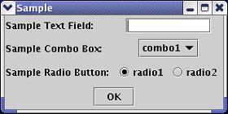

Pass Parameters into User Defined Function
If you intend to pass some parameters from the GUI (toolbar or shortcut menu) to the UDF, the Data Display API "class GraphDialogBox" can be used to create a dialog box for this purpose.
This API function allows you to create your own dialog box that will appear when the function is selected. For example, the dialog box below was created with the following sample program.
GraphManager* manager = GraphManager::getInstance();
GraphDialogBox dialog("Sample");
dialog.addTextField("Sample Text Field", "");
vector<string> comboItems;
comboItems.push_back("combo1");
comboItems.push_back("combo2");
dialog.addComboBox("Sample Combo Box", comboItems);
vector<string> radioItems;
radioItems.push_back("radio1");
radioItems.push_back("radio2");
dialog.addRadioButton("Sample Radio Button", radioItems);
vector<string> results;
results = manager->openDialogBox(dialog);
